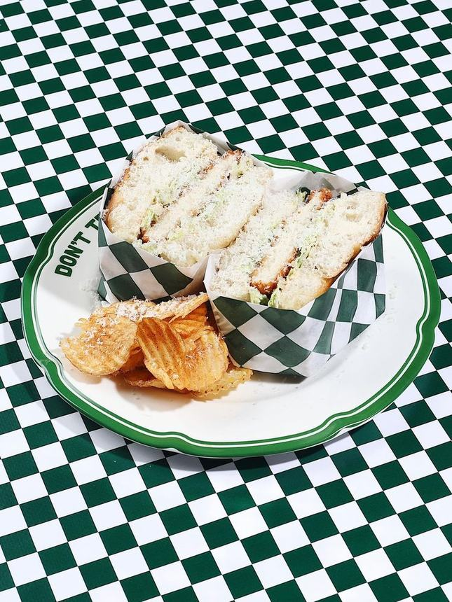
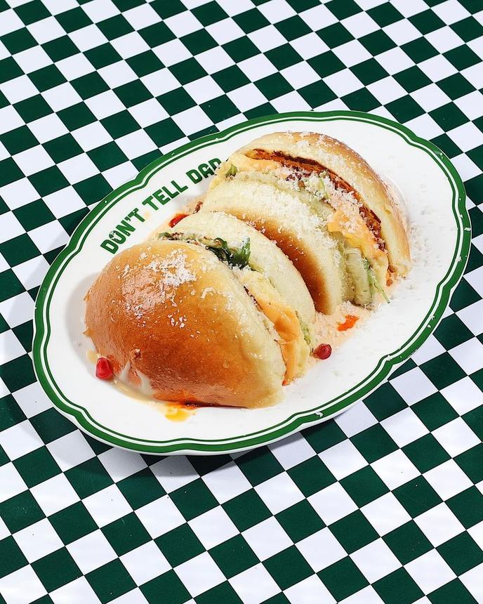
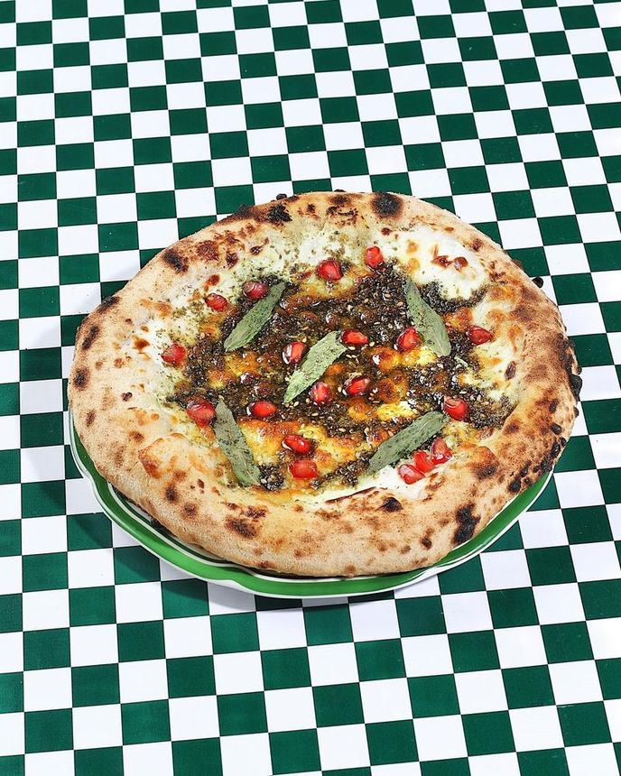
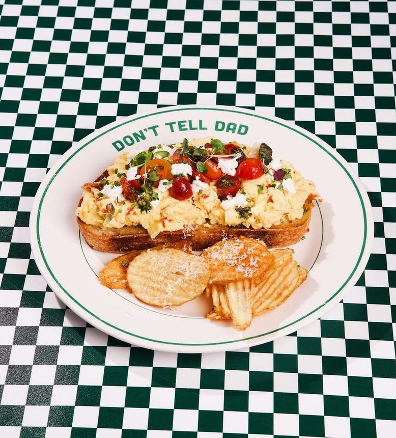
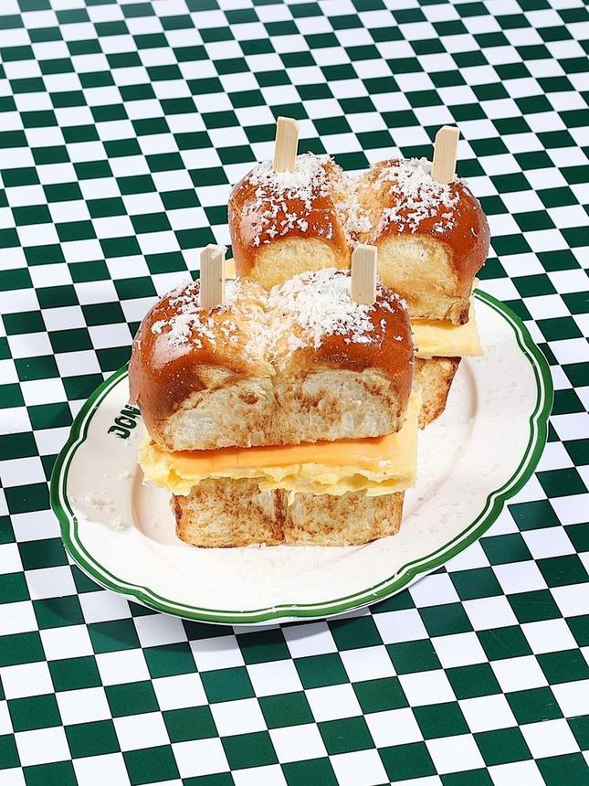
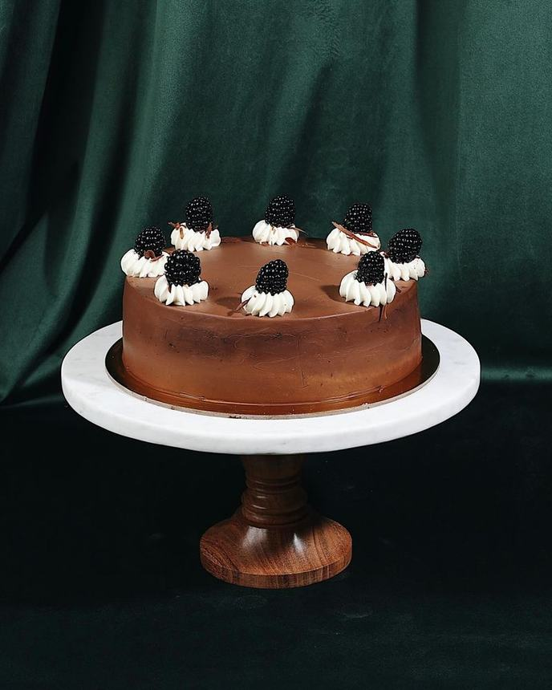
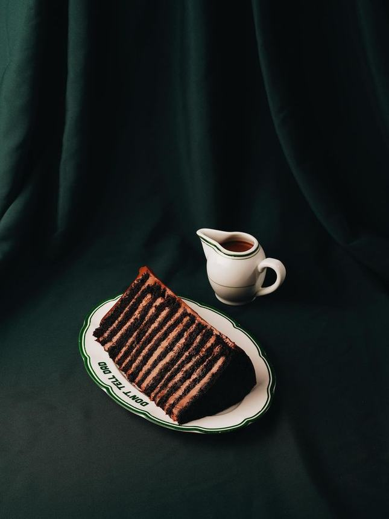
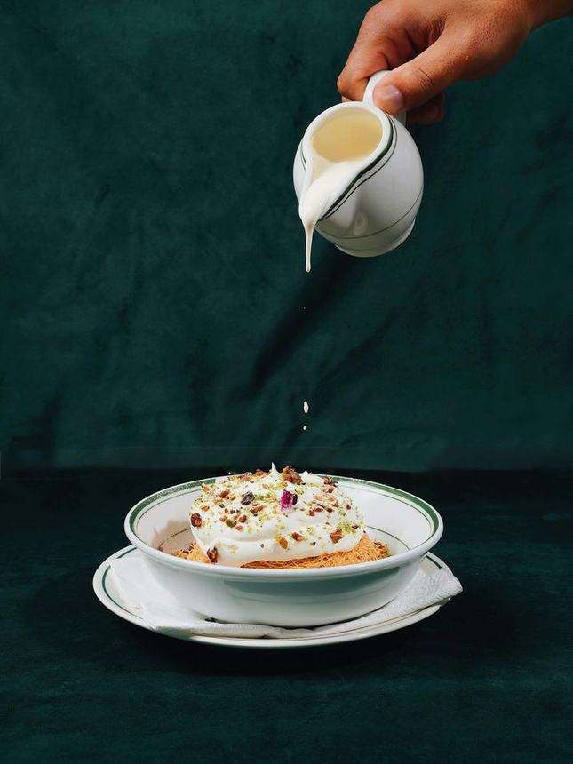
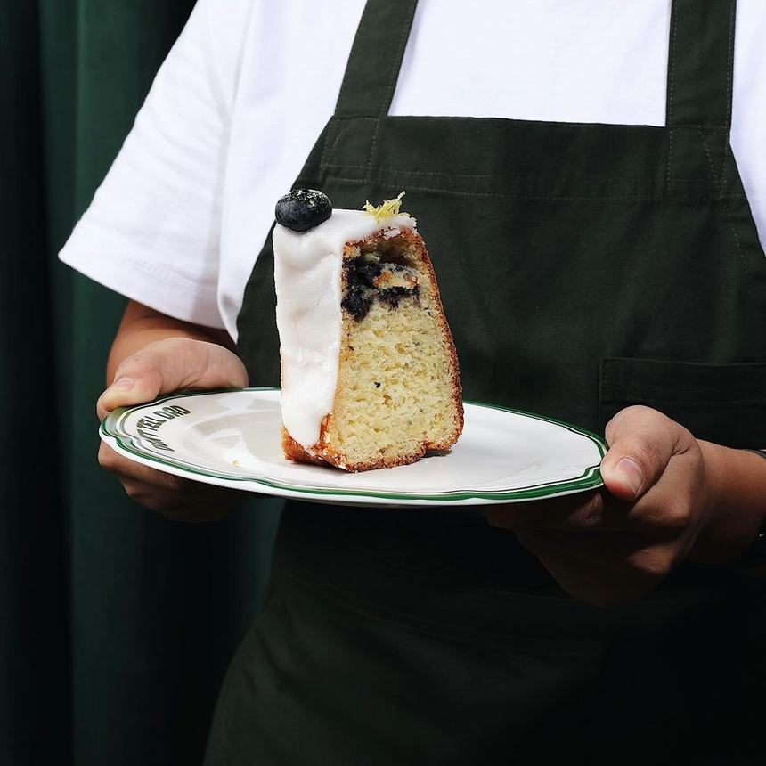
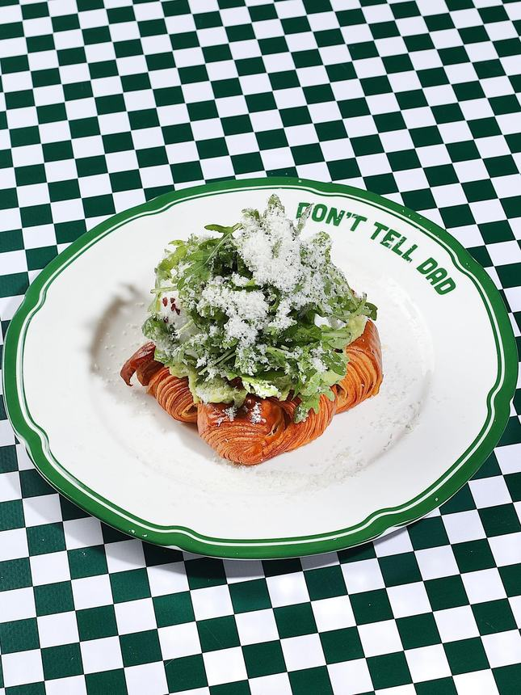

Don't
Tell Dad
Where good food meets better secrets. أكل طيب… وأسرار أطيب
The secret
Nobody
needs to know
A restaurant and a specialty coffee house on King Fahd Street, open from seven in the morning. Cinnamon rolls, layer cakes cut to order, shakshuka in the pan it was cooked in — served on our own plates, on a green check we are quite attached to.
It is usually full. That is the honest version. Come early, or book a table.
What people order
The regulars
This is what people order most, not a menu. The full menu and its prices live in the restaurant and on our Instagram — we would rather show you nothing than show you a price that has changed.










4.1 out of 5 · 2,338 reviews on Google
Their words,
not ours
“Highly recommended! The egg sandwich was absolutely delicious.”
Rashid · Local Guide · Google
“One of the best restaurants we've visited. The food was amazing, and the service was outstanding.”
Nouf Ali · Google
Quoted from public Google reviews, trimmed but not reworded.
Visit
King Fahd St,
Al Khobar
| Saturday | 07:00 — 23:30 |
| Sunday | 07:00 — 23:30 |
| Monday | 07:00 — 23:30 |
| Tuesday | 07:00 — 23:30 |
| Wednesday | 07:00 — 23:30 |
| Thursday | 07:00 — 00:00 |
| Friday | 07:00 — 00:00 |
Al Khobar Al Shamalia, Al Khobar 34425
Dine-in · Takeaway · Delivery
Come in.
We won't tell.
The booking link and a confirmed WhatsApp number are still to come from the restaurant, so neither button is wired to a guess.